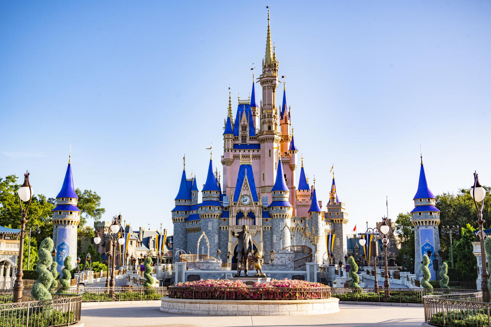

The Walt Disney World

A Walt Disney World é um dos maiores e mais famosos complexos turísticos do mundo, localizado em Bay Lake e Lake Buena Vista, na Flórida, Estados Unidos. Foi inaugurado em 1971, após anos de planejamento e construção liderados pelo próprio Walt Disney.
Sua história

Walt Disney teve a ideia de criar um parque temático depois de visitar o Parque Nacional de Griffith, em Los Angeles, em 1930. Ele criou a Disneyland na Califórnia, que se tornou um enorme sucesso e o levou a começar a planejar um parque ainda maior na Flórida.
Walt Disney e seu legado

Infelizmente, Walt Disney faleceu em 1966, antes que a construção do parque fosse concluída, mas seu irmão Roy Disney e uma equipe dedicada de funcionários continuaram seu trabalho e, finalmente, abriram a Walt Disney World em outubro de 1971.
Atrações inéditas

Desde então, o complexo cresceu para incluir quatro parques temáticos (Magic Kingdom, Epcot, Disney's Hollywood Studios e Disney's Animal Kingdom), dois parques aquáticos, inúmeros hotéis, restaurantes e lojas, além de outras atrações e entretenimento.
O sucesso do Walt Disney World
A Walt Disney World é um destino turístico popular para famílias e fãs da Disney de todas as idades, atraindo milhões de visitantes todos os anos. É conhecido por suas atrações emocionantes, personagens icônicos, shows espetaculares e uma experiência imersiva que transporta os visitantes para mundos de fantasia e aventura.
Localização do Walt Disney World

O Walt Disney World está localizado em Bay Lake e Lake Buena Vista, na Flórida, Estados Unidos. Ele fica a cerca de 32 km a sudoeste de Orlando e a cerca de 122 km a leste de Tampa. O complexo abrange uma área de cerca de 110 km², que inclui quatro parques temáticos, dois parques aquáticos, inúmeros hotéis, restaurantes, lojas e outras atrações e entretenimento. O endereço físico do Walt Disney World é 1180 Seven Seas Drive, Lake Buena Vista, FL 32830, EUA.
Parques Temáticos
Magic Kingdom

É o mais antigo dos parques temáticos da Disney e é inspirado no parque original da Disneyland na Califórnia. Ele é conhecido por seu icônico Castelo da Cinderela e por apresentar muitas das atrações e personagens clássicos da Disney.
Epcot
É um parque temático que celebra a inovação e a cultura. Ele apresenta duas seções principais: Future World, que apresenta atrações relacionadas à tecnologia, ciência e natureza, e o World Showcase, que apresenta pavilhões que representam diferentes países e culturas.
Disney's Hollywood Studios

É um parque temático que celebra o mundo do entretenimento, com atrações baseadas em filmes e programas de TV da Disney e de outras produtoras. Ele é conhecido por suas atrações emocionantes, incluindo a montanha-russa da Guerra nas Estrelas e a Tower of Terror.
Disney's Animal Kingdom
É um parque temático que celebra a vida animal e a natureza. Ele apresenta atrações emocionantes, incluindo uma safári em veículo aberto para ver animais exóticos, além de áreas temáticas baseadas em diferentes regiões do mundo, como Ásia e África.
Conheça o Art Of Animation Resort

O Disney's Art of Animation Resort é um hotel temático localizado dentro do Walt Disney World Resort em Orlando, Flórida. O resort foi inaugurado em 2012 e oferece quartos temáticos inspirados em quatro filmes populares da Disney e da Pixar: "Procurando Nemo", "O Rei Leão", "Carros" e "A Pequena Sereia".
As animações mais perto do que nunca

O resort é conhecido por sua arquitetura colorida e vibrante, além de suas piscinas temáticas, restaurantes e áreas de lazer. Os hóspedes podem desfrutar de atividades como filmes ao ar livre, fogueiras, aulas de arte e recreação supervisionada para crianças.
A essência da arte para todos

O Art of Animation é uma opção popular para famílias e grupos que procuram uma experiência completa da Disney, com fácil acesso aos parques temáticos e outras atrações do Walt Disney World.
Parques Aquáticos do Walt Disney World
Disney's Typhoon Lagoon

Typhoon Lagoon é um parque aquático temático que oferece uma grande diversidade de atrações
aquáticas, como uma enorme piscina de ondas, um rio calmo, toboáguas emocionantes e outras atividades. O
tema do
parque é baseado em uma ilha tropical que sofreu a devastação de um grande tufão.
Disney's Blizzard Beach

Blizzard Beach é um parque aquático temático que oferece várias atividades aquáticas emocionantes, como um toboágua em queda livre, um rio lento, uma piscina de ondas e outras opções. O tema do parque é baseado em uma estação de esqui que derreteu após uma grande nevasca.
Disney Springs
Disney Springs é uma área de compras, entretenimento e restaurantes localizada dentro do Walt Disney World Resort, na Flórida. Anteriormente conhecida como Downtown Disney, a área passou por uma grande reforma e renomeação em 2015, recebendo o nome de Disney Springs.
O Disney Springs é composto por quatro áreas principais:
- The Landing
- The Landing é uma das quatro áreas de Disney Springs e é projetada para parecer uma antiga vila ribeirinha da Flórida. A área é cercada por água e tem muitos restaurantes e lojas à beira do rio, incluindo o famoso restaurante Jock Lindsey's Hangar Bar. Os visitantes podem fazer um passeio de barco pela área ou desfrutar de uma bebida no bar da água. The Landing também abriga uma galeria de arte e uma loja de cerveja artesanal, bem como um bar e clube de comédia.
- Town Center
- Town Center é uma das quatro áreas de Disney Springs e é projetada para parecer uma cidade moderna e elegante. A área apresenta uma variedade de lojas, desde boutiques de alta moda até lojas de varejo populares. Os visitantes podem encontrar marcas famosas, como Sephora, Pandora e Zara, bem como lojas exclusivas da Disney, como a World of Disney. Town Center também oferece muitas opções de restaurantes, desde lanchonetes até restaurantes sofisticados, e uma fonte central espetacular que é um ponto de encontro popular. A área tem uma atmosfera vibrante e é ótima para um passeio descontraído e compras.
- Marketplace
- Marketplace é uma das quatro áreas de Disney Springs e é projetada para parecer um bairro charmoso e pitoresco, com edifícios coloridos e uma atmosfera alegre. A área oferece muitas lojas exclusivas da Disney, como a loja de brinquedos World of Disney e a loja de fantasias Bibbidi Bobbidi Boutique. Os visitantes também podem encontrar muitas opções de restaurantes, como o famoso restaurante de frutos do mar Fulton's Crab House e o Rainforest Cafe, que tem uma decoração temática exótica. Marketplace também oferece atividades divertidas para toda a família, como uma sala de jogos e uma pista de boliche.
- West Side
- West Side é uma das quatro áreas de Disney Springs e é projetada para parecer um bairro urbano moderno, com uma variedade de entretenimento e opções de compras. A área apresenta o Cirque du Soleil e o AMC Dine-In Theater, que oferece refeições completas enquanto assiste a um filme. Os visitantes também podem desfrutar de música ao vivo no House of Blues, ou explorar as lojas especializadas em esportes, como a loja da NBA. West Side também oferece opções de refeições diversas, desde o churrasco texano do Bongos até o sushi sofisticado do Morimoto Asia. A área tem uma atmosfera vibrante e é ótima para passear e relaxar.


Cada área tem um tema e estilo únicos, oferecendo aos visitantes uma grande variedade de lojas, restaurantes, bares e locais de entretenimento.
Além das compras e restaurantes, o Disney Springs oferece muitas opções de entretenimento, incluindo cinemas, shows ao vivo, uma casa noturna e muitas outras atrações. Uma das atrações mais populares é o Cirque du Soleil - La Nouba, que é um espetáculo de acrobacias, dança e teatro que ocorre no Disney Springs.
O Disney Springs é um destino popular para visitantes que desejam ter uma experiência diferente dos parques temáticos do Walt Disney World, mas ainda assim querem experimentar a magia e a diversão da Disney. A área é gratuita para visitar e estacionar, e oferece uma experiência de compras e entretenimento única em um ambiente vibrante e emocionante.
Vantagens de ser um hóspede disney

Há muitas vantagens em se hospedar em um dos hotéis da Disney durante a sua visita ao Walt Disney World Resort. Algumas das vantagens incluem:
-

- Magic Hours
- Os hóspedes dos hotéis da Disney têm acesso a horas mágicas extras em determinados parques temáticos, permitindo que eles entrem nos parques antes ou fiquem depois do horário normal de funcionamento. Isso significa menos tempo nas filas e mais tempo aproveitando as atrações.
- Transporte gratuito
- Os hóspedes da Disney têm acesso gratuito aos ônibus, barcos e monotrilhos da Disney, permitindo que se locomovam facilmente entre os parques temáticos, hotéis e áreas de compras e entretenimento.
- Serviço de transporte de bagagem
- Os hóspedes da Disney podem ter suas malas enviadas diretamente do aeroporto para o hotel e depois para o quarto, sem precisar se preocupar com o transporte de bagagem.
- FastPass+
- Os hóspedes da Disney podem agendar suas reservas de FastPass+ com antecedência, permitindo que evitem as filas em até três atrações por dia.
- Serviço de quarto gratuito
- Os hóspedes da Disney podem desfrutar do serviço de quarto gratuito durante toda a sua estadia.
- Entrada antecipada nos parques temáticos
- Os hóspedes da Disney têm acesso antecipado aos parques temáticos em dias selecionados, permitindo que entrem no parque antes que ele seja aberto ao público geral.
- Reservas de restaurantes
- Os hóspedes da Disney podem fazer reservas em restaurantes populares com antecedência, garantindo que consigam um lugar em locais que costumam ficar lotados rapidamente.